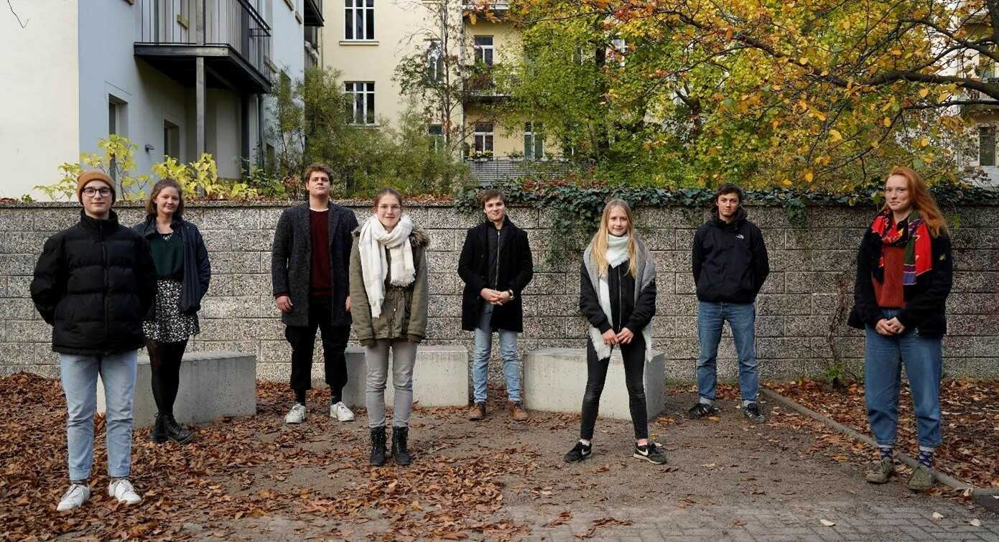
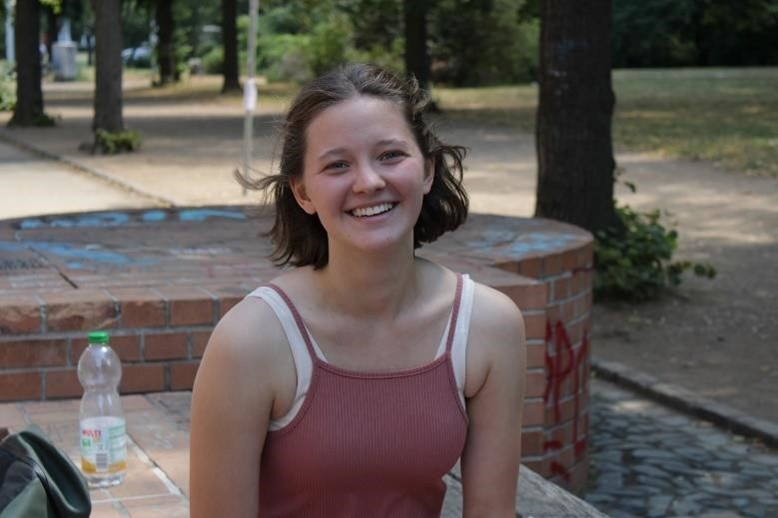
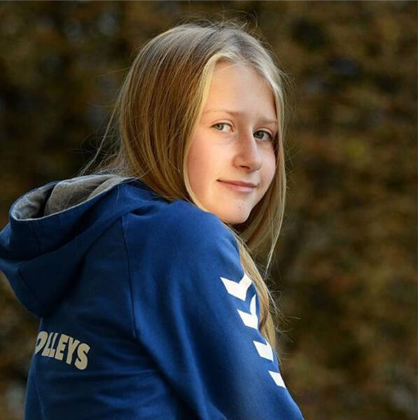

Vorstand
Vorstand
Der Vorstand des Kantrates der Immanuel-Kant-Schule des Schuljahres 2020/2021
(von links: Tom Spiegel, Alina Rauhut, Kristian Lehmann, Lara
Sauder, Valentin Asper, Freda Lehmann, Malte Mierzwa und
Frederike Völkner)
Schülersprecher:
Hey, nehmt euch kurz Zeit und lest euch gerne durch, wer ich bin
und wer die anderen Vorstandsmitglieder des Kantrates sind. Ich
bin Kristian mit K:), 18 Jahre alt und besuche die 11. Klasse.
Seit einigen Jahren bin ich schon im Kantrat des
Kant-Gymnasiums. Seit 2 Schuljahren bin ich auch im Vorstand des
Kantrates. Außerdem bin ich seit diesem Schuljahr
Schülersprecher von euch. Freddy Völkner (stellvertretende
Schülersprecherin) und ich bilden ein junges, ideenreiches,
dynamisches und aufgeschlossenes Team. In den letzten Jahren
habe ich ein bisschen meiner Lebenszeit den Projekten
„Schulclub“ und „Schüler helfen Schülern“ gewidmet. Diese
Projekte sollen Teamarbeit und Abwechslung des Schulalltages mit
sich bringen. In meiner restlichen Zeit gehe ich Badminton
spielen, im Fitnessstudio trainieren und verbringe Zeit mit
meinen Freunden und meinen 5 Geschwistern. Vielen Dank an alle,
die sich diesen Text durchgelesen haben . Wenn ihr irgendwelche
Probleme, Wünsche und Anmerkungen habt, kommt einfach auf mich
zu oder kommt zu den Kantratsssitzungen :)
Stellv. Schülersprecherin:

Hallo an alle, Mein Name ist Freddy und ich darf euch, die
Schülerinnen und Schüler, dieses Jahr als stellvertretende
Schülersprecherin vertreten. Darauf bin ich schon sehr gespannt,
da wir hier am Kant einen engagierten Kantrat haben, der schon
in den letzten Jahren so einiges erreicht hat. Deshalb freue ich
mich wirklich auf das kommende Jahr. Zu mir persönlich: Das
Schuljahr 2020/21 wird, wenn alles gut geht, mein letztes hier
sein. Mit meiner Leistungskurswahl Deutsch und Geschichte bin
ich mehr als nur zufrieden und finde trotz der ganzen
Hausaufgaben, Vorträge oder Klausuren immer noch Zeit für meine
Hobbys. Dazu gehört auf jeden Fall seit mehr als zehn Jahren das
Theaterspielen im Haus Steinstraße. Ansonsten bin ich für alles
zu haben, was in irgendeiner Form mit Bewegung, am liebsten noch
draußen, zu tun hat - von Fahrradfahren über Frisbeespielen,
Paddeln oder Schwimmen bis hin zu mehrtägigen Wandertouren mit
Gaskocher und Zelt. Schon in den letzten Jahren konnte ich in
verschiedenen Projekten, wie auch dem Demokratieprojekt,
mitwirken und meinen Kurs im Kantrat vertreten. Und jetzt freue
ich mich auf ein spannendes Jahr voller Zusammenarbeit. Im
Vorstand, im Kantrat und mit der gesamten Schülerschaft. Ihr
könnt mich immer gern ansprechen und über eure Klassensprecher
Vorschläge oder Kritik anbringen, Eure Freddy
Schulkonferenzmitglied:

Hallo! Mein Name ist Malte Mierzwa. Ich bin 16 Jahre alt und
gehe in die 11. Klasse in den Deutsch/Geschichte Leistungskurs.
Seit bereits fünf Jahren bin ich nun schon im Kantrat als
Klassensprecher aktiv. Darüber hinaus wurde ich im letzten
Schuljahr als Mitglied der Schulkonferenz in den Vorstand
gewählt und wurde in diesem Jahr in meinem Amt bestätigt, was
mich sehr gefreut hat! Ich bin der Meinung, dass die Stimme der
Schüler bei wichtigen Entscheidungen, die unmittelbar die
Schülerschaft betreffen, bisweilen noch zu wenig gehört wird.
Für die Interessen der Schüler möchte ich auch in diesem Jahr
kämpfen und einstehen! Im letzten Schuljahr konnte ich bereits
an der Realisierung wichtiger Projekte mitwirken. Doch auch in
diesem Schuljahr hoffe ich, dass wir weiter gute Arbeit leisten
können, um den Alltag von uns SchülerInnen zu verbessern. Ich
möchte beispielsweise als Leiter der Arbeitsgruppe
Öffentlichkeitsarbeit nach einem sehr aktiven Jahr weiter an der
Bekanntheit des Kantrates innerhalb der Schülerschaft arbeiten,
die Kompetenzen des Kantrates forcieren und die nötige
Diskussion über die politische Haltung des Kantrates anstoßen.
Doch besonders wichtig ist mir auch die Schaffung und Stärkung
einer Gemeinschaft im Kantrat, aber vor allem in der
Schülerschaft. In meiner Freizeit engagiere ch mich ehrenamtlich
bei der Wasserwacht als Rettungsschwimmer, lese gerne, trainiere
Kickboxen und spiele Trompete. Außerdem filme und fotografiere
ich und treffe mich sehr gerne mit meinen Freunden. Ich freue
mich auf die Arbeit im Vorstand und in der Schulkonferenz, um
eure Anliegen dort zu vertreten! Euer Malte
Schulkonferenzmitglied:

Hallo zusammen, mein Name ist Valentin Asper und ich gehe
zurzeit in die 12. Klasse unserer Schule. Im Frühjahr 2021 mache
ich also mein Abitur. Trotz der schulischen Belastung ist es mir
stets wichtig, mich in der Schülervertretung unserer Schule zu
engagieren. Ich war bis zu diesem Jahr noch Schülersprecher (2
Jahre lang) und bin seit der 8. Klasse aktiv im Kantrat dabei.
Von Beginn an, hat es mir Spaß gemacht, mich mit anderen
auszutauschen und zu diskutieren sowie die Interessen der
Schülerinnen und Schüler zu vertreten und im besten Fall
durchzusetzen. Auch in meinem letzten Jahr an der Schule möchte
ich daher meine Kraft dafür einsetzen, die Schülerinnen und
Schüler besser zu vertreten und in den unterschiedlichsten
Gremien, ganz besonders in der Schulkonferenz, unserer
Schülerschaft eine Stimme zu geben. Für mich sind zentrale
Anliegen die Stärkung der wichtigen schulinternen und -äußeren
Öffentlichkeit der Kantratsarbeit, der Klassenarbeitsplan in der
Sekundarstufe I, die Stärkung der Interessenvertretung und die
Ausweitung der Kantratskompetenzen sowie viele weitere Projekte,
die der Kantrat initiiert, bspw. die Müllsammelaktion oder die
Klausurtagung. Ich freue mich sehr auf die bevorstehende Arbeit
und das letzte Jahr in der Schülervertretung am Kant. An dieser
Stelle möchte ich mich auch für das Vertrauen und die
Zusammenarbeit in den letzten Jahren bedanken, bei denen ich als
Vorsitzender das Kantratsteam anleiten und somit viele tolle
Projekte durchführen konnte und durfte. Ihr sollt und dürft mich
weiterhin bei Anliegen jeglicher Art kontaktieren oder zu mir
kommen. Ich freue mich, wenn ich Euch helfen kann oder wir
gemeinsam Probleme bekämpfen! Euer Valentin
Stellv. Schulkonferenzmitglied:

Hallo ihr Lieben, ich bin Alina Rauhut aus der Elften, in der
ich die Leistungskurse Geschichte und Deutsch belege. Bei den
diesjährigen Wahlen wurde ich als Euer stellvertretendes
Konferenzmitglied gewählt, worüber ich mich sehr gefreut habe!
Seit ca. drei Jahren bin ich mit bei den Versammlungen im
Kantrat und seit letztem Jahr im Vorstand. Das mir die Arbeit im
Kantrat sehr viel Spaß macht, muss ich daher wahrscheinlich
nicht nochmal großartig betonen. Ich spüre einfach gern den
Zusammenhalt und die Offenheit in den Diskussionen und mag es
sehr nach neuen Ideen und Lösungen zu suchen. Aber auch die
Arbeit im Vorstand ist sehr spannend für mich. Dabei kann sich
nochmal intensiver mit aktuellen Thematiken und Problemen
auseinandergesetzt werden und auf Eure konkreten Ideen
eingegangen werden. Im letzten Jahr war ich als Delegierte für
den Stadtschülerrat beteiligt, dieses Jahr, wie schon erwähnt,
als Stellvertretendes Konferenzmitglied. Ich habe mich sehr
darüber gefreut in diesem Jahr eine andere, mir neue Rolle,
annehmen zu können. Während im letzten Jahr meine Aufmerksamkeit
(bedingt durch mein Amt) auf die Schulen in Leipzig generell
lag, kann ich mich dieses Jahr wieder mehr auf unsere Schule
fokussieren und dabei versuchen Eure Ideen, Interessen oder
Probleme durchzusetzen. Ich freue mich auf das Zusammenarbeiten
im Kantrat und auf die Arbeit in der Schulkonferenz, Liebe
Grüße, Alina :)
Stellv. Schulkonferenzmitglied:
Mein Name ist Tom Spiegel, ich bin 15 Jahre alt und gehe in die
10. Klasse. Meine Hobbys sind singen, Bass spielen und
schauspielern. Ich freue mich darüber in diesem Jahr wieder ein
Teil des Kantrats zu sein. Es ist einfach großartig, dass wir
Schüler einen Ort haben, um Demokratie zu leben und dadurch mit
in den Schulalltag eingreifen zu können. Umso mehr freue ich
mich wieder stellvertretendes Schulkonferenz-Mitglied zu sein.
Mir hat dieses Amt schon letztes Jahr sehr viel Freude bereitet,
da man mit der Schulleitung und den Elternrat wichtige Probleme
im Schulhaus und Schulleben ansprechen und verändern konnte. Ich
hoffe das wir trotz Corona dieses Jahr wieder Erfolge feiern
können und das Schulleben Verbessern werden. Ich freue mich auf
das Schuljahr 2020/2021 und wünsche uns dem Kantrat und euch
Schülern maximale Erfolge. Liebe Grüße Euer Tom
Stadtschülerratsdelegierte:

Hallöchen, ich bin Freda Lehmann, 11 Jahre alt und gehe in die
Klasse 6a, die Bläserklasse (ich spiele eine von 5 Querflöten).
In meiner Freizeit spiele ich Volleyball und treffe mich gerne
mit Freunden. Ich habe mich sehr darüber gefreut, dass ich schon
im zweiten Jahr an dieser Schule von euch zur Stadtschülerrats
Delegierten gewählt wurde. Ich denke, es wird mir sehr viel Spaß
machen und ich werde viele neue Erfahrungen sammeln können.
Viele werden vielleicht denken, dass ich dem Amt noch nicht
gewachsen bin, weil ich erst in die sechste Klasse gehe, aber
ich kann euch versichern, dass ich meine Aufgabe ernst nehme und
mich ins Zeug legen werde, um eure Erwartungen und Wünsche zu
erfüllen und durchzusetzen (Na ja, vielleicht muss ich noch ein,
zwei Mal nachfragen, aber dann kriege ich es auch selbst hin;)).
Denn ich diskutiere gern und finde es toll, dass es so eine
Organisation, wie den Kantrat gibt, in der wir SchülerInnen
unsere Probleme und Wünsche vortragen dürfen und versuchen, das
was nicht funktioniert, gemeinsam mit anderen Schülern zu
verbessern. Außerdem wird es sehr spannend sein zu erfahren, was
die anderen Schulen aus unserer Stadt Leipzig so für Probleme
haben - und wie wir sie zusammen lösen können. Denn ich finde,
zusammen klappt alles besser und es macht auch mehr Spaß! ;)
Liebe Grüße, Freda
Stadtschülerratsdelegierte:

Hallo, Ich bin Lara, fast 18 Jahre alt und ich gehe nun schon
seit über sieben Jahren aufs Kant. In meiner Schullaufbahn war
ich immer mal sporadisch Klassensprecher und wirke seit dem
letzten Jahr aktiv im Kantrat als Protokollantin und in der
Öffentlichkeitsarbeitsgruppe mit. Mich begeistert immer wieder
die Kreativität und Vielfalt in der Arbeit unseres Kantrates,
denn diese halte ich für besonders wichtig, um unsere Schule am
Laufen zu halten. Deshalb freue ich mich sehr, dieses Jahr als
Stadt-Schülerrats-Delegierte zusammen mit Freda auf einer ganz
neuen Ebene agieren zu dürfen und dort auch etwas für die
Verbesserung unseres Schullebens erreichen zu können. Ich bin
gespannt, was uns erwartet und blicke voller Zuversicht auf ein
spannendes arbeitsreiches und erfolgreiches Schuljahr. Eure Lara